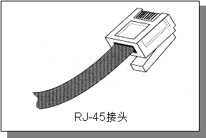
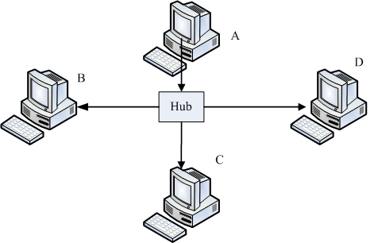
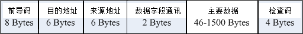
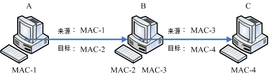
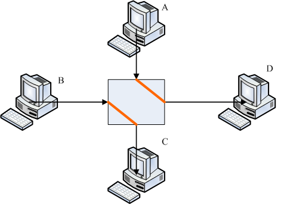

2.2 TCP/IP 的链结层相关协议
TCP/IP 最底层的链结层主要与硬件比较有关系，因此底下我们主要介绍一些 WAN 与 LAN 的硬件。 同时会开始介绍那重要的 CSMA/CD 的以太网络协议，以及相关的硬件与 MAC 讯框格式等。那就开始来聊聊啰！
2.2.1 广域网使用的设备
在 2.1.3 节我们有提到过，广域网使用的设备价格较为低廉。 不过广域网使用到的设备非常的多，一般用户通常会接触到的主要是 ADSL 调制解调器或者是光纤到大厦，以及第四台的 Cable 宽带等。在这里我们先介绍一些比较常见的设备，如果以后你有机会接触到其他设备，再请你依据需求自行查阅相关书籍吧！
传统电话拨接：透过 ppp 协议
早期网络大概都只能透过调制解调器加上电话线以及计算机的九针串行端口 (以前接鼠标或游戏杆的插孔)，然后透过 Point-to-Point Protocol (PPP 协议) 配合拨接程序来取得网络 IP 参数，这样就能够上网了。不过这样的速度非常慢，而且当电话拨接后， 就不能够讲电话了！因为 PPP 支持 TCP/IP, NetBEUI, IPX/SPX 等通讯协议，所以使用度非常广！
整合服务数字网络 (Integrated Services Digital Network, ISDN)
也是利用现有的电话线路来达成网络联机的目的，只是联机的两端都需要有 ISDN 的调制解调器来提供联机功能。 ISDN 的传输有多种通道可供使用，并且可以将多个信道整合应用，因此速度可以成倍成长。基本的 B 信道速度约为 64Kbps， 但如美国规格使用 23 个以上的通道来达成联机，此时速度可达 1.5Mbps 左右。不过台湾这玩意儿比较少见。
非对称数位用路回路 (Asymmetric Digital Subscriber Line, ADSL)：透过 pppoe 协定
也是透过电话线来拨接后取得 IP 的一个方法，只不过这个方式使用的是电话的高频部分，与一般讲电话的频率不同。 因此妳可以一边使用 ADSL 上网同时透过同一个电话号码来打电话聊天。在台湾，由于上传/下载的带宽不同， 因此才称为非对称的回路。ADSL 同样使用调制解调器，只是他透过的是 PPPoE (PPP over Ethernet) 的方法！ 将 PPP 仿真在以太网络卡上，因此你的主机需要透过一张网络卡来连接到调制解调器，并透过拨接程序来取得新的接口 (ppp0) 喔！
电缆调制解调器 (Cable modem)
主要透过有线电视 (台湾所谓的第四台) 使用的缆线作为网络讯号媒体，同样需要具备调制解调器来连接到 ISP，以取得网络参数来上网。 Cable modem 的带宽主要是分享型的，所以通常具有区域性，并不是你想装就能装的哩！
2.2.2 局域网络使用的设备-以太网络
在局域网络的环境中，我们最常使用的就是以太网络。当然啦，在某些超高速网络应用的环境中， 还可能会用到价格相当昂贵的光纤信道哩。只是如同前面提到的，以太网络因为已经标准化了，设备设置费用相对低廉， 所以一般你会听到什么网络线或者是网络媒体，几乎都是使用以太网络来架设的环境啦！ 只是这里还是要提醒您，整个网络世界并非仅有以太网络这个硬件接口喔！ 事实上，想了解整个以太网络的发展，建议你可以直接参考风信子与张民人先生翻译的 『Switched & Fast 以太网络』一书，该书内容相当的有趣，挺适合阅读的吶。 底下我们仅做个简单的介绍而已。
- 以太网络的速度与标准
以太网络的流行主要是它成为国际公认的标准所致。早先 IEEE 所制订的以太网络标准为 802.3 的 IEEE 10BASE5 ，这个标准主要的定义是：『10 代表传输速度为 10Mbps，BASE 表示采用基频信号来进行传输，至于 5 则是指每个网络节点之间最长可达 500 公尺。』
由于网络的传输信息就是 0 与 1 啊，因此，数据传输的单位为每秒多少 bit ， 亦即是 M bits/second, Mbps 的意思。那么为何制订成为 10Mbps 呢？ 这是因为早期的网络线压制的方法以及相关的制作方法，还有以太网络卡制作的技术并不是很好， 加上当时的数据传输需求并没有像现在这么高，所以 10Mbps 已经可以符合大多数人的需求了。
Tips: 我们看到的网络提供者 (Internet Services Provider, ISP) 所宣称他们的 ADSL 传输速度可以达到 下行/上行 2Mbps/128Kbps (Kbits per second) 时，那个 Kb 指的可不是 bytes 而是 bits 喔！所以 2M/128K 在实际的档案大小传输速度上面，最大理论的传输为 256KBps/16 KBps(KBytes per second)，所以正常下载的速度约在每秒 100~200 KBytes 之间吶！ 同样的道理，在网络卡或者是一些网络媒体的广告上面，他们都会宣称自己的产品可以自动辨识传输速度为 10/100 Mbps ( Mega-bits per second)，呵呵！该数值还是得再除以 8 才是我们一般常用的档案容量计算的单位 bytes 喔！

早期的网络线使用的是旧式的同轴电缆线，这种线路在现在几乎已经看不到了。取而代之的是类似传统电话线的双绞线 (Twisted Pair Ethernet) ，IEEE 并将这种线路的以太网络传输方法制订成为 10BASE-T 的标准。 10BASE-T 使用的是 10 Mbps 全速运作且采用无遮蔽式双绞线 (UTP) 的网络线。此外， 10BASE-T 的 UTP 网络线可以使用星形联机(star)， 也就是以一个集线器为中心来串连各网络设备的一个方法，图 2.1-1 就是星形联机的一个示意图。
不同于早期以一条同轴电缆线链接所有的计算机的 bus 联机，透过星形联机的帮助， 我们可以很简单的加装其他的设备或者是移除其他设备，而不会受到其他装置的影响，这对网络设备的扩充性与除错来说， 都是一项相当棒的设计！也因此 10BASE-T 让以太网络设备的销售额大幅提升啊！
后来 IEEE 更制订了 802.3u 这个支持到 100Mbps 传输速度的 100BASE-T 标准，这个标准与 10BASE-T 差异不大， 只是双绞线线材制作需要更精良，同时也已经支持使用了四对绞线的网络线了， 也就是目前很常见的八蕊网络线吶！这种网络线我们常称为等级五 (Category 5, CAT5) 的网络线。 这种传输速度的以太网络就被称为 Fast ethernet 。至于目前我们常常听到的 Gigabit 网络速度 1000 Mbps 又是什么吶？那就是 Gigabit ethernet 哩！只是 Gigabit ethernet 的网络线就需要更加的精良。
| 名称 | 速度 | 网络线等级 |
|---|---|---|
| 以太网络(Ethernet) | 10Mbps | - |
| 高速以太网络(Fast Ethernet) | 100Mbps | CAT 5 |
| 超高速以太网络(Gigabit Ethernet) | 1000Mbps | CAT 5e/CAT 6 |
为什么每当传输速度增加时，网络线的要求就更严格呢？这是因为当传输速度增加时，线材的电磁效应相互干扰会增强， 因此在网络线的制作时就得需要特别注意线材的质料以及内部线蕊心之间的缠绕情况配置等， 以使电子流之间的电磁干扰降到最小，才能使传输速度提升到应有的 Gigabit 。 所以说，在以太网络世界当中，如果你想要提升原有的 fast ethernet 到 gigabit ethernet 的话， 除了网络卡需要升级之外，主机与主机之间的网络线， 以及连接主机线路的集线器/交换器等，都必须要提升到可以支持 gigabit 速度等级的设备才行喔！
- 以太网络的网络线接头 (跳线/并行线)
前面提到，网络的速度与线材是有一定程度的相关性的，那么线材的接头又是怎样呢？ 目前在以太网络上最常见到的接头就是 RJ-45 的网络接头，共有八蕊的接头，有点像是胖了的电话线接头， 如下所示：
 图 2.2-1、RJ-45 接头示意图
而 RJ-45 接头又因为每条蕊线的对应不同而分为 568A 与 568B 接头，这两款接头内的蕊线对应如下表：
| 接头名称\蕊线顺序 | 1 | 2 | 3 | 4 | 5 | 6 | 7 | 8 |
|---|---|---|---|---|---|---|---|---|
| 568A | 白绿 | 绿 | 白橙 | 蓝 | 白蓝 | 橙 | 白棕 | 棕 |
| 568B | 白橙 | 橙 | 白绿 | 蓝 | 白蓝 | 绿 | 白棕 | 棕 |
事实上，虽然目前的以太网络线有八蕊且两两成对，但实际使用的只有 1,2,3,6 蕊而已， 其他的则是某些特殊用途的场合才会使用到。但由于主机与主机的联机以及主机与集线器的联机时， 所使用的网络线脚位定义并不相同，因此由于接头的不同网络线又可分为两种：
- 跳线：一边为 568A 一边为 568B 的接头时称为跳线，用在直接链接两部主机的网络卡。
- 并行线：两边接头同为 568A 或同为 568B 时称为并行线，用在链接主机网络卡与集线器之间的线材；
2.2.3 以太网络的传输协议：CSMA/CD
整个以太网络的重心就是以太网络卡啦！所以说，以太网络的传输主要就是网络卡对网络卡之间的数据传递而已。 每张以太网络卡出厂时，就会赋予一个独一无二的卡号，那就是所谓的 MAC (Media Access Control) 啦！ 理论上，网卡卡号是不能修改的，不过某些笔记本电脑的网卡卡号是能够修改的呦！ 那么以太网络的网卡之间数据是如何传输的呢？那就得要谈一下 IEEE 802.3 的标准 CSMA/CD (Carrier Sense Multiple Access with Collision Detection) 了！我们以下图来作为简介，下图内的中心点为集线器， 各个主机都是联机到集线器，然后透过集线器的功能向所有主机发起联机的。
 图 2.2-2、CSMA/CD联机示意图，由 A 发送资料给 D 时，注意箭头方向
集线器是一种网络共享媒体，什么是网络共享媒体啊？想象一下上述的环境就像一个十字路口，而集线器就是那个路口！ 这个路口一次只允许一辆车通过，如果两辆车同时使用这个路口，那么就会发生碰撞的车祸事件啊！那就是所谓的共享媒体。 也就是说，网络共享媒体在单一时间点内， 仅能被一部主机所使用。
理解了共享媒体的意义后，再来，我们就得要讨论，那么以太网络的网卡之间是如何传输的呢？我们以上图中的 A 要发给 D 网卡为例好了，简单的说， CSMA/CD 搭配上述的环境，它的传输情况需要有以下的流程：
监听媒体使用情况 (Carrier Sense)：A 主机要发送网络封包前，需要先对网络媒体进行监听，确认没有人在使用后， 才能够发送出讯框；
多点传输 (Multiple Access)：A 主机所送出的数据会被集线器复制一份，然后传送给所有连接到此集线器的主机！ 也就是说， A 所送出的数据， B, C, D 三部计算机都能够接收的到！但由于目标是 D 主机，因此 B 与 C 会将此讯框数据丢弃，而 D 则会抓下来处理；
碰撞侦测 (Collision Detection)：该讯框数据附有检测能力，若其他主机例如 B 计算机也刚好在同时间发送讯框数据时， 那么 A 与 B 送出的数据碰撞在一块 (出车祸) ，此时这些讯框就是损毁，那么 A 与 B 就会各自随机等待一个时间， 然后重新透过第一步再传送一次该讯框数据。
了解这个程序很重要吗？我们就来谈谈：
网络忙碌时，集线器灯号闪个不停，但我的主机明明没有使用网络： 透过上述的流程我们会知道，不管哪一部主机发送出讯框，所有的计算机都会接收到！因为集线器会复制一份该数据给所有计算机。 因此，虽然只有一部主机在对外联机，但是在集线器上面的所有计算机灯号就都会闪个不停！
我的计算机明明没有被入侵，为何我的数据会被隔壁的计算机窃取： 透过上述的流程，我们只要在 B 计算机上面安装一套监听软件，这套软件将原本要丢弃的讯框数据捉下来分析，并且加以重组， 就能够知道原本 A 所送出的讯息了。这也是为什么我们都建议重要数据在因特网上面得要『加密』后再传输！
既然共享媒体只有一个主机可以使用，为何大家可以同时上网： 这个问题就有趣了，既然共享媒体一次只能被一个主机所使用，那么万一我传输 100MB 的档案，集线器就得被我使用 80 秒 (以 10Mbps 传输时)，在这期间其他人都不可以使用吗？不是的，由于标准的讯框数据在网络卡与其他以太网络媒体一次只能传输 1500bytes，因此我的 100MB 档案就得要拆成多个小数据报，然后一个一个的传送，每个数据报传送前都要经过 CSMA/CD 的机制。 所以，这个集线器的使用权是大家抢着用的！即使只有一部主机在使用网络媒体时，那么这部主机在发送每个封包间， 也都是需要等待一段时间的 (96 bit time)！
讯框要多大比较好？能不能修改讯框？： 如上所述，那么讯框的大小能不能改变呢？因为如果讯框的容量能够增大，那么小数据报的数量就会减少， 那每个讯框传送间的等待就可以减少了！是这样没错，但是以太网络标准讯框确实定义在 1500 bytes， 但近来的超高速以太网络媒体有支持 Jumbo frame (巨型讯框,注10) 的话，那么就能够将讯框大小改为 9000bytes 哩！但不是很建议大家随便修改啦！为什么呢？2.2.5 MTU 那小节再说。
2.2.4 MAC 的封装格式
上面提到的 CSMA/CD 传送出去的讯框数据，其实就是 MAC 啦！MAC 其实就是我们上面一直讲到的讯框 (frame) 啰！ 只是这个讯框上面有两个很重要的数据，就是目标与来源的网卡卡号，因此我们又简称网卡卡号为 MAC 而已。 简单的说，你可以把 MAC 想成是一个在网络线上面传递的包裹，而这个包裹是整个网络硬件上面传送数据的最小单位了。 也就是说，网络线可想成是一条『一次仅可通过一个人』的独木桥， 而 MAC 就是在这个独木桥上面动的人啦！接下来，来看一看 MAC 这个讯框的内容吧！
 图 2.2-3、以太网络的 MAC 讯框
上图中的目的地址与来源地址指的就是网卡卡号 (hardware address, 硬件地址)，我们前面提到，每一张网卡都有一个独一无二的卡号， 那个卡号的目的就在这个讯框的表头数据使用到啦！硬件地址最小由 00:00:00:00:00:00 到 FF:FF:FF:FF:FF:FF (16 进位法)， 这 6 bytes 当中，前 3bytes 为厂商的代码，后 3bytes 则是该厂商自行设定的装置码了。
在 Linux 当中，你可以使用 ifconfig 这个指令来查阅你的网络卡卡号喔！特别注意，在这个 MAC 的传送中，他仅在局域网络内生效，如果跨过不同的网域 (这个后面 IP 的部分时会介绍)，那么来源与目的的硬件地址就会跟着改变了。 这是因为变成不同网络卡之间的交流了嘛！所以卡号当然不同了！如下所示：
 图 2.2-4、同一讯框在不同网域的主机间传送时，讯框的表头变化
例如上面的图标，我的数据要由计算机 A 通过 B 后才送达 C ，而 B 计算机有两块网络卡，其中 MAC-2 与 A 计算机的 MAC-1 互通，至于 MAC-3 则与 C 计算机的 MAC-4 互通。但是 MAC-1 不能与 MAC-3 与 MAC-4 互通，为啥？因为 MAC-1 这块网络卡并没有与 MAC-3 及 MAC-4 使用同样的 switch/hub 相接嘛！所以，数据的流通会变成：
- 先由 MAC-1 传送到 MAC-2 ，此时来源是 MAC-1 而目的地是 MAC-2；
- B 计算机接收后，察看该讯框，发现目标其实是 C 计算机，而为了与 C 计算机沟通， 所以他会将讯框内的来源 MAC 改为 MAC-3 ，而目的改为 MAC-4 ，如此就可以直接传送到 C 计算机了。
也就是说，只要透过 B (就是路由器) 才将封包送到另一个网域 (IP 部分会讲) 去的时候， 那么讯框内的硬件地址就会被改变，然后才能够在同一个网域里面直接进行讯框的流通啊！
Tips: 由于网络卡卡号是跟着网络卡走的，并不会因为重灌操作系统而改变， 所以防火墙软件大多也能够针对网络卡来进行抵挡的工作喔！ 不过抵挡网卡仅能在局域网络内进行而已，因为 MAC 不能跨 router 嘛！！
为什么资料量最小要 46 最大为 1500 bytes 呢？
讯框内的数据内容最大可达 1500bytes 这我们现在知道了，那为何要规范最小数据为 46bytes 呢？这是由于 CSMA/CD 机制所算出来的！ 在这个机制上面可算出若要侦测碰撞，则讯框总数据量最小得要有 64bytes ，那再扣除目的地址、来源地址、检查码 (前导码不算) 后， 就可得到数据量最小得要有 46bytes 了！也就是说，如果妳要传输的数据小于 46byes ，那我们的系统会主动的填上一些填充码， 以补齐至少 46bytes 的容量才行！
2.2.5 MTU 最大传输单位
通过上面 MAC 封装的定义，现在我们知道标准以太网络讯框所能传送的数据量最大可以到达 1500 bytes ， 这个数值就被我们称为 MTU (Maximum Transmission Unit, 最大传输单位)。 你得要注意的是，每种网络接口的 MTU 都不相同，因此有的时候在某些网络文章上面你会看到 1492 bytes 的 MTU 等等。不过，在以太网络上，标准的定义就是 1500 bytes。
在待会儿会介绍到的 IP 封包中，这个 IP 封包最大可以到 65535 bytes，比 MTU 还要大呢！既然礼物 (IP) 都比盒子 (MAC) 大，那怎么可能放的进去啊？所以啰， IP 封包是可以进行拆解的，然后才能放到 MAC 当中啊！等到数据都传到目的地， 再由目的地的主机将他组装回来就是了。所以啰，如果 MTU 能够大一些的话，那么 IP 封包的拆解情况就会降低， 封包与封包传送之间的等待时间 (前一小节提到的 96 bit time) 也会减少，就能够增加网络带宽的使用啰！
为了这个目的，所以 Gigabit 的以太网络媒体才有支持 Jumbo frame 的嘛！这个 Jumbo frame 一般都定义到 9000bytes。 那你会说，既然如此，我们的 MTU 能不能改成 9000bytes 呢？这样一来不就能够减少数据封包的拆解，以增加网络使用率吗？ 是这样没错，而且，你也确实可以在 Linux 系统上更改 MTU 的！但是，如果考虑到整个网络，那么我们不建议你修改这个数值。 为什么呢？
我们的封包总是需要在 Internet 上面跑吧？你无法确认所有的网络媒体都是支持那么大的 MTU 对吧！ 如果你的 9000 bytes 封包通过一个不支持 Jumbo frame 的网络媒体时，好一点的是该网络媒体 (例如 switch/router 等) 会主动的帮你重组而进行传送，差一点的可能就直接回报这个封包无效而丢弃了～这个时候可就糗大啰～ 所以， MTU 设定为 9000 这种事情，大概仅能在内部网络的环境中作～举例来说，很多的内部丛集系统 (cluster) 就将他们的内部网络环境 MTU 设定为 9000，但是对外的适配卡可还是原本的标准 1500 喔！ ^_^
也就是说，不论你的网络媒体支持 MTU 到多大，你必须要考虑到你的封包需要传到目的地时， 所需要经过的所有网络媒体，然后再来决定你的 MTU 设定才行。就因为这样，我们才不建议你修改标准以太网络的 MTU 嘛！
Tips: 早期某些网络媒体 (例如 IP 分享器) 支持的是 802.2, 802.3 标准所组合成的 MAC 封装，它的 MTU 就是 1492 ， 而且这些设备可能不会进行封包重组，因此早期网络上面常常有朋友问说，他们连上某些网站时，总是会联机逾时而断线。 但透过修改客户端的 MTU 成为 1492 之后，上网就没有问题了。原因是什么呢？读完上头的数据，您应该能理解了吧？^_^
2.2.6 集线器、交换器与相关机制
共不共享很重要，集线器还是交换器？ (注11)
刚刚我们上面提到了，当一个很忙碌的网络在运作时，集线器 (hub) 这个网络共享媒体就可能会发生碰撞的情况， 这是因为 CSMA/CD 的缘故。那有没有办法避免这种莫名其妙的封包碰撞情况呢？有的，那就使用非共享媒体的交换器即可啊！
交换器 (switch) 等级非常多，我们这里仅探讨支持 OSI 第二层的交换器。交换器与集线器最大的差异，在于交换器内有一个特别的内存， 这个内存可以记录每个 switch port 与其连接的 PC 的 MAC 地址，所以，当来自 switch 两端的 PC 要互传数据时，每个讯框将直接透过交换器的内存数据而传送到目标主机上！ 所以 switch 不是共享媒体，且 switch 的每个埠口 (port) 都具有独立的带宽喔！
举例来说，10/100 的 Hub 上链接 5 部主机，那么整个 10/100Mbps 是分给这五部主机的， 所以这五部主机总共只能使用 10/100Mbps 而已。那如果是 switch 呢？由于『每个 port 都具有 10/100Mbps 的带宽』， 所以就看你当时的传输行为是如何啰！举例来说，如果是底下的状况时，每个联机都是 10/100 Mbps 的。
 图 2.2-5、交换器每个埠口的带宽使用示意图
A 传送到 D 与 B 传送到 C 都独自拥有 10/100Mbps 的带宽，两边并不会互相影响！ 不过，如果是 A 与 D 都传给 C 时，由于 C port 就仅有 10/100Mbps ，等于 A 与 D 都需要抢 C 节点的 10/100Mbps 来用的意思。 总之，你就是得要记得的是，switch 已经克服了封包碰撞的问题，因为他有个 switch port 对应 MAC 的相关功能， 所以 switch 并非共享媒体喔！同时需要记得的是，现在的 switch 规格很多， 在选购的时候，千万记得选购可以支持全双工/半双工，以及支持 Jumbo frame 的为佳！
什么是全双工/半双工(full-duplex, half-duplex)
前面谈到网络线时，我们知道八蕊的网络线实际上仅有两对被使用，一对是用在传送，另一对则是在接收。 如果两端的 PC 同时支持全双工时，那表示 Input/Output 均可达到 10/100Mbps， 亦即数据的传送与接收同时均可达到 10/100bps 的意思，总带宽则可达到 20/200Mbps 啰 (其实是有点语病的，因为 Input 可达 10/100Mbps， output 可达 10/100Mbps ， 而不是 Input 可直接达到 20/200Mbps 喔！)如果你的网络环境想要达到全双工时， 使用共享媒体的 Hub 是不可能的，因为网络线脚位的关系，无法使用共享媒体来达到全双工的！ 如果你的 switch 也支持全双工模式，那么在 switch 两端的 PC 才能达到全双工喔！
自动协调速度机制 (auto-negotiation)：
我们都知道现在的以太网络卡是可以向下支持的，亦即是 Gigabit 网络卡可以与早期的 10/100Mbps 网络卡链接而不会发生问题。但是，此时的网络速度是怎样判定呢？ 早期的 switch/hub 必须要手动切换速度才行，新的 hub/switch 因为有支持 auto-negotiation 又称为 N-Way 的功能，他可自动的协调出最高的传输速度来沟通喔！如果有 Gigabit 与 10/100Mbps 在 switch 上面， 则 N-Way 会先使用最高的速度 (gigabit) 测试是否能够全部支持，如果不行的话，就降速到下一个等级亦即 100 Mbps 的速度来运作的！
自动分辨网络线跳线或并行线 (Auto MDI/MDIX)：
那么我们是否需要自行分辨并行线与跳线呢？不需要啦！因为 switch 若含有auto MDI/MDIX 的功能时， 会自动分辨网络线的脚位来调整联机的，所以你就不需要管你的网络线是跳线还是并行线啰！方便吧！ ^_^
讯号衰减造成的问题
由于电子讯号是会衰减的，所以当网络线过长导致电子讯号衰减的情况严重时， 就会导致联机质量的不良了。因此，链接各个节点的网络线长度是有限制的喔！ 不过，一般来说，现今的以太网络 CAT5 等级的网络线大概都可以支持到 100 公尺的长度， 所以应该无庸担心才是吶！
但是，造成讯号衰减的情况并非仅有网络线长度而已！如果你的网络线折得太严重(例如在门边常常被门板压，导致变形) ，或者是自行压制网络线接头，但是接头部分的八蕊蕊线缠绕度不足导致电磁干扰严重， 或者是网络线放在户外风吹日晒导致脆化的情况等等，都会导致电子讯号传递的不良而造成联机质量恶劣， 此时常常就会发现偶而可以联机、有时却又无法联机的问题了！因此，当你需要针对企业内部来架设整体的网络时， 注意结构化布线可是很重要的喔！
结构化布线
所谓的结构化布线指的是将各个网络的组件分别拆开，分别安装与布置到企业内部， 则未来想要提升网络硬件等级或者是移动某些网络设备时，只需要更动类似配线盘的机柜处， 以及末端的墙上预留孔与主机设备的联机就能够达到目的了。例如底下的图示：
 图 2.2-6、结构化布线简易图标
图 2.2-6、结构化布线简易图标在墙内的布线需要很注意，因为可能一布线完成后就使用 5-10 年以上喔！那你需要注意的仅有末端墙上的预留孔以及配线端部分。 事实上，光是结构化布线所需要选择的网络媒体与网络线的等级，还有机柜、机架，以及美化与隐藏网络线的材料等等的挑选， 以及实际施工所需要注意的事项，还有所有硬件、施工所需要注意的标准规范等等， 已经可以写满厚厚一本书，而鸟哥这里的文章旨在介绍一个中小企业内部主机数量较少的环境， 所以仅提到最简单的以一个或两个交换器 (swtich) 串接所有网络设备的小型星形联机状态而已。
如果你有需要相关硬件结构化布线的信息，可以参考风信子兄翻译的『Swtich and Fast 以太网络』一书的后半段！至于网络上的高手吗？你可以前往酷学园请教 ZMAN (http://http://wordpress.morezman.com/) 大哥喔！